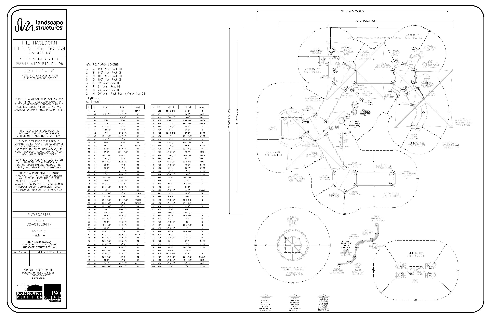

Check before you start
Filter & sort
Tapes run hole-center to stake-center, level and tight. Done marks stay on this phone only.
Pole marks
PlayBooster posts: marks measured up from the bottom of the pole. Grade sticker 34" (check it on the post). Deck hanger clamp = 34 + deck height − ½. Component clamps = 34 + deck height + the sheet's top-of-clamp height. Skyways shade columns (30, 76, 97): marks up from finish grade. Every mark lists where it came from.
All posts
Footings
Hole depths are measured from the finished surface. Tap a type to show only those holes on the map; tap again to show all.
Before you pour
- Put 4" of crushed rock in each post hole, level hole to hole, so every grade sticker lands at grade.
- Pour only after the structure is assembled, braced, plumb and level.
- Concrete within 4" of the top of the hole, sloped away from the post. Wash splashes off the posts.
- LSI: let footings cure at least 72 hours before anyone plays on it. Install drive rivets in every half clamp once it's all plumb and level.
Install docs
Offset string line
A string set a little off the pole centers so you can square the outside of the poles when you pour. 2½" off center is the outside face of a 5" pole. Enter the holes on one line, or tap a hole on the map and add it.
Hardware by component
How to sort each bag. Tap a component to open its sort and assembly steps.
Setting the control points
| Point | Where | X from 0,0 | Y from 0,0 |
|---|
Check strings
Add your own point
Set a stake anywhere, measure it from the lines, and it shows up in the Tapes pickers. Saved on this phone.